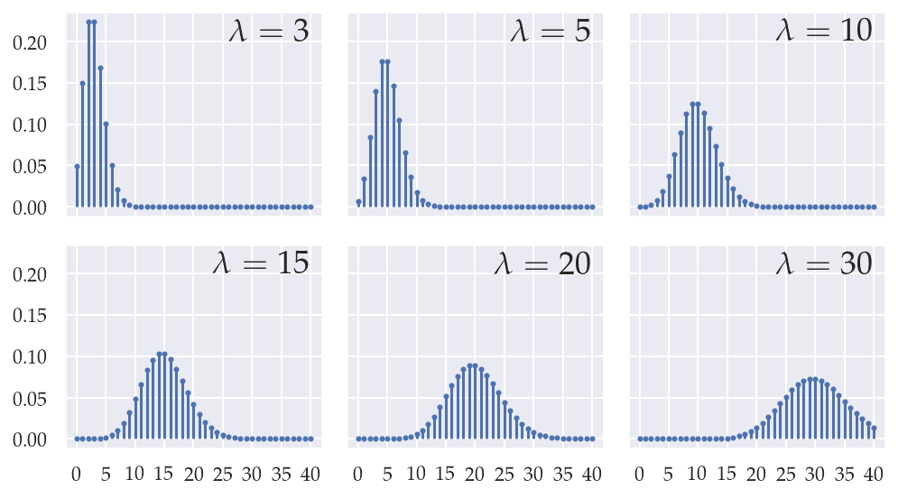

Section 2.3 — Inventory of discrete distributions
Contents
Section 2.3 — Inventory of discrete distributions#
This notebook contains all the code examples from Section 2.3 Inventory of discrete distributions of the No Bullshit Guide to Statistics.
Notebook setup#
# load Python modules
import numpy as np
import pandas as pd
import seaborn as sns
import matplotlib.pyplot as plt
# Figures setup
sns.set_theme(
context="paper",
style="whitegrid",
palette="colorblind",
rc={'figure.figsize': (7,4)},
)
%config InlineBackend.figure_format = 'retina'
# # silence annoying warnings
# import warnings; warnings.filterwarnings('ignore')
# set random seed for repeatability
np.random.seed(42)
from plot_helpers import generate_pmf_panel
from scipy.stats.distributions import binom
Binomial#
model = binom
kmax = 40
ks = np.arange(0, kmax+1)
kticks = 5
# parameter dicts (list of lists)
params_matrix = [
[ dict(n=kmax, p=0.08), dict(n=kmax, p=0.16), dict(n=kmax, p=0.25) ],
[ dict(n=kmax, p=0.3), dict(n=kmax, p=0.4), dict(n=kmax, p=0.5) ],
]
generate_pmf_panel("figures/prob/probpanels/binomial_panel.pdf",
ks, model, params_matrix,
kticks=kticks,
fontsize=14)
---------------------------------------------------------------------------
FileNotFoundError Traceback (most recent call last)
File /opt/hostedtoolcache/Python/3.8.13/x64/lib/python3.8/site-packages/matplotlib/texmanager.py:233, in TexManager._run_checked_subprocess(self, command, tex, cwd)
232 try:
--> 233 report = subprocess.check_output(
234 command, cwd=cwd if cwd is not None else self.texcache,
235 stderr=subprocess.STDOUT)
236 except FileNotFoundError as exc:
File /opt/hostedtoolcache/Python/3.8.13/x64/lib/python3.8/subprocess.py:415, in check_output(timeout, *popenargs, **kwargs)
413 kwargs['input'] = empty
--> 415 return run(*popenargs, stdout=PIPE, timeout=timeout, check=True,
416 **kwargs).stdout
File /opt/hostedtoolcache/Python/3.8.13/x64/lib/python3.8/subprocess.py:493, in run(input, capture_output, timeout, check, *popenargs, **kwargs)
491 kwargs['stderr'] = PIPE
--> 493 with Popen(*popenargs, **kwargs) as process:
494 try:
File /opt/hostedtoolcache/Python/3.8.13/x64/lib/python3.8/subprocess.py:858, in Popen.__init__(self, args, bufsize, executable, stdin, stdout, stderr, preexec_fn, close_fds, shell, cwd, env, universal_newlines, startupinfo, creationflags, restore_signals, start_new_session, pass_fds, encoding, errors, text)
855 self.stderr = io.TextIOWrapper(self.stderr,
856 encoding=encoding, errors=errors)
--> 858 self._execute_child(args, executable, preexec_fn, close_fds,
859 pass_fds, cwd, env,
860 startupinfo, creationflags, shell,
861 p2cread, p2cwrite,
862 c2pread, c2pwrite,
863 errread, errwrite,
864 restore_signals, start_new_session)
865 except:
866 # Cleanup if the child failed starting.
File /opt/hostedtoolcache/Python/3.8.13/x64/lib/python3.8/subprocess.py:1704, in Popen._execute_child(self, args, executable, preexec_fn, close_fds, pass_fds, cwd, env, startupinfo, creationflags, shell, p2cread, p2cwrite, c2pread, c2pwrite, errread, errwrite, restore_signals, start_new_session)
1703 err_msg = os.strerror(errno_num)
-> 1704 raise child_exception_type(errno_num, err_msg, err_filename)
1705 raise child_exception_type(err_msg)
FileNotFoundError: [Errno 2] No such file or directory: 'latex'
The above exception was the direct cause of the following exception:
RuntimeError Traceback (most recent call last)
Input In [5], in <cell line: 13>()
7 # parameter dicts (list of lists)
8 params_matrix = [
9 [ dict(n=kmax, p=0.08), dict(n=kmax, p=0.16), dict(n=kmax, p=0.25) ],
10 [ dict(n=kmax, p=0.3), dict(n=kmax, p=0.4), dict(n=kmax, p=0.5) ],
11 ]
---> 13 generate_pmf_panel("figures/prob/probpanels/binomial_panel.pdf",
14 ks, model, params_matrix,
15 kticks=kticks,
16 fontsize=14)
File ~/work/noBSstatsnotebooks/noBSstatsnotebooks/notebooks/plot_helpers.py:319, in generate_pmf_panel(fname, ks, model, params_matrix, params_to_latex, kticks, fontsize, labeler)
316 # Save as PDF and PNG
318 basename = fname.replace('.pdf','').replace('.png','')
--> 319 fig.tight_layout()
320 fig.savefig(basename + '.pdf', dpi=300, bbox_inches="tight", pad_inches=0.02)
321 fig.savefig(basename + '.png', dpi=300, bbox_inches="tight", pad_inches=0.02)
File /opt/hostedtoolcache/Python/3.8.13/x64/lib/python3.8/site-packages/matplotlib/figure.py:3224, in Figure.tight_layout(self, pad, h_pad, w_pad, rect)
3222 renderer = get_renderer(self)
3223 with getattr(renderer, "_draw_disabled", nullcontext)():
-> 3224 kwargs = get_tight_layout_figure(
3225 self, self.axes, subplotspec_list, renderer,
3226 pad=pad, h_pad=h_pad, w_pad=w_pad, rect=rect)
3227 if kwargs:
3228 self.subplots_adjust(**kwargs)
File /opt/hostedtoolcache/Python/3.8.13/x64/lib/python3.8/site-packages/matplotlib/tight_layout.py:320, in get_tight_layout_figure(fig, axes_list, subplotspec_list, renderer, pad, h_pad, w_pad, rect)
315 return {}
316 span_pairs.append((
317 slice(ss.rowspan.start * div_row, ss.rowspan.stop * div_row),
318 slice(ss.colspan.start * div_col, ss.colspan.stop * div_col)))
--> 320 kwargs = _auto_adjust_subplotpars(fig, renderer,
321 shape=(max_nrows, max_ncols),
322 span_pairs=span_pairs,
323 subplot_list=subplot_list,
324 ax_bbox_list=ax_bbox_list,
325 pad=pad, h_pad=h_pad, w_pad=w_pad)
327 # kwargs can be none if tight_layout fails...
328 if rect is not None and kwargs is not None:
329 # if rect is given, the whole subplots area (including
330 # labels) will fit into the rect instead of the
(...)
334 # auto_adjust_subplotpars twice, where the second run
335 # with adjusted rect parameters.
File /opt/hostedtoolcache/Python/3.8.13/x64/lib/python3.8/site-packages/matplotlib/tight_layout.py:82, in _auto_adjust_subplotpars(fig, renderer, shape, span_pairs, subplot_list, ax_bbox_list, pad, h_pad, w_pad, rect)
80 if ax.get_visible():
81 try:
---> 82 bb += [ax.get_tightbbox(renderer, for_layout_only=True)]
83 except TypeError:
84 bb += [ax.get_tightbbox(renderer)]
File /opt/hostedtoolcache/Python/3.8.13/x64/lib/python3.8/site-packages/matplotlib/axes/_base.py:4637, in _AxesBase.get_tightbbox(self, renderer, call_axes_locator, bbox_extra_artists, for_layout_only)
4635 if self.yaxis.get_visible():
4636 try:
-> 4637 bb_yaxis = self.yaxis.get_tightbbox(
4638 renderer, for_layout_only=for_layout_only)
4639 except TypeError:
4640 # in case downstream library has redefined axis:
4641 bb_yaxis = self.yaxis.get_tightbbox(renderer)
File /opt/hostedtoolcache/Python/3.8.13/x64/lib/python3.8/site-packages/matplotlib/axis.py:1105, in Axis.get_tightbbox(self, renderer, for_layout_only)
1101 return
1103 ticks_to_draw = self._update_ticks()
-> 1105 self._update_label_position(renderer)
1107 # go back to just this axis's tick labels
1108 ticklabelBoxes, ticklabelBoxes2 = self._get_tick_bboxes(
1109 ticks_to_draw, renderer)
File /opt/hostedtoolcache/Python/3.8.13/x64/lib/python3.8/site-packages/matplotlib/axis.py:2349, in YAxis._update_label_position(self, renderer)
2345 return
2347 # get bounding boxes for this axis and any siblings
2348 # that have been set by `fig.align_ylabels()`
-> 2349 bboxes, bboxes2 = self._get_tick_boxes_siblings(renderer=renderer)
2350 x, y = self.label.get_position()
2351 if self.label_position == 'left':
File /opt/hostedtoolcache/Python/3.8.13/x64/lib/python3.8/site-packages/matplotlib/axis.py:1881, in Axis._get_tick_boxes_siblings(self, renderer)
1879 axis = getattr(ax, f"{axis_name}axis")
1880 ticks_to_draw = axis._update_ticks()
-> 1881 tlb, tlb2 = axis._get_tick_bboxes(ticks_to_draw, renderer)
1882 bboxes.extend(tlb)
1883 bboxes2.extend(tlb2)
File /opt/hostedtoolcache/Python/3.8.13/x64/lib/python3.8/site-packages/matplotlib/axis.py:1085, in Axis._get_tick_bboxes(self, ticks, renderer)
1083 def _get_tick_bboxes(self, ticks, renderer):
1084 """Return lists of bboxes for ticks' label1's and label2's."""
-> 1085 return ([tick.label1.get_window_extent(renderer)
1086 for tick in ticks if tick.label1.get_visible()],
1087 [tick.label2.get_window_extent(renderer)
1088 for tick in ticks if tick.label2.get_visible()])
File /opt/hostedtoolcache/Python/3.8.13/x64/lib/python3.8/site-packages/matplotlib/axis.py:1085, in <listcomp>(.0)
1083 def _get_tick_bboxes(self, ticks, renderer):
1084 """Return lists of bboxes for ticks' label1's and label2's."""
-> 1085 return ([tick.label1.get_window_extent(renderer)
1086 for tick in ticks if tick.label1.get_visible()],
1087 [tick.label2.get_window_extent(renderer)
1088 for tick in ticks if tick.label2.get_visible()])
File /opt/hostedtoolcache/Python/3.8.13/x64/lib/python3.8/site-packages/matplotlib/text.py:910, in Text.get_window_extent(self, renderer, dpi)
907 raise RuntimeError('Cannot get window extent w/o renderer')
909 with cbook._setattr_cm(self.figure, dpi=dpi):
--> 910 bbox, info, descent = self._get_layout(self._renderer)
911 x, y = self.get_unitless_position()
912 x, y = self.get_transform().transform((x, y))
File /opt/hostedtoolcache/Python/3.8.13/x64/lib/python3.8/site-packages/matplotlib/text.py:309, in Text._get_layout(self, renderer)
306 ys = []
308 # Full vertical extent of font, including ascenders and descenders:
--> 309 _, lp_h, lp_d = renderer.get_text_width_height_descent(
310 "lp", self._fontproperties,
311 ismath="TeX" if self.get_usetex() else False)
312 min_dy = (lp_h - lp_d) * self._linespacing
314 for i, line in enumerate(lines):
File /opt/hostedtoolcache/Python/3.8.13/x64/lib/python3.8/site-packages/matplotlib/backends/backend_agg.py:259, in RendererAgg.get_text_width_height_descent(self, s, prop, ismath)
257 texmanager = self.get_texmanager()
258 fontsize = prop.get_size_in_points()
--> 259 w, h, d = texmanager.get_text_width_height_descent(
260 s, fontsize, renderer=self)
261 return w, h, d
263 if ismath:
File /opt/hostedtoolcache/Python/3.8.13/x64/lib/python3.8/site-packages/matplotlib/texmanager.py:335, in TexManager.get_text_width_height_descent(self, tex, fontsize, renderer)
333 if tex.strip() == '':
334 return 0, 0, 0
--> 335 dvifile = self.make_dvi(tex, fontsize)
336 dpi_fraction = renderer.points_to_pixels(1.) if renderer else 1
337 with dviread.Dvi(dvifile, 72 * dpi_fraction) as dvi:
File /opt/hostedtoolcache/Python/3.8.13/x64/lib/python3.8/site-packages/matplotlib/texmanager.py:271, in TexManager.make_dvi(self, tex, fontsize)
262 # Generate the dvi in a temporary directory to avoid race
263 # conditions e.g. if multiple processes try to process the same tex
264 # string at the same time. Having tmpdir be a subdirectory of the
(...)
268 # the absolute path may contain characters (e.g. ~) that TeX does
269 # not support.)
270 with TemporaryDirectory(dir=Path(dvifile).parent) as tmpdir:
--> 271 self._run_checked_subprocess(
272 ["latex", "-interaction=nonstopmode", "--halt-on-error",
273 f"../{texfile.name}"], tex, cwd=tmpdir)
274 (Path(tmpdir) / Path(dvifile).name).replace(dvifile)
275 return dvifile
File /opt/hostedtoolcache/Python/3.8.13/x64/lib/python3.8/site-packages/matplotlib/texmanager.py:237, in TexManager._run_checked_subprocess(self, command, tex, cwd)
233 report = subprocess.check_output(
234 command, cwd=cwd if cwd is not None else self.texcache,
235 stderr=subprocess.STDOUT)
236 except FileNotFoundError as exc:
--> 237 raise RuntimeError(
238 'Failed to process string with tex because {} could not be '
239 'found'.format(command[0])) from exc
240 except subprocess.CalledProcessError as exc:
241 raise RuntimeError(
242 '{prog} was not able to process the following string:\n'
243 '{tex!r}\n\n'
(...)
247 tex=tex.encode('unicode_escape'),
248 exc=exc.output.decode('utf-8'))) from exc
RuntimeError: Failed to process string with tex because latex could not be found
---------------------------------------------------------------------------
FileNotFoundError Traceback (most recent call last)
File /opt/hostedtoolcache/Python/3.8.13/x64/lib/python3.8/site-packages/matplotlib/texmanager.py:233, in TexManager._run_checked_subprocess(self, command, tex, cwd)
232 try:
--> 233 report = subprocess.check_output(
234 command, cwd=cwd if cwd is not None else self.texcache,
235 stderr=subprocess.STDOUT)
236 except FileNotFoundError as exc:
File /opt/hostedtoolcache/Python/3.8.13/x64/lib/python3.8/subprocess.py:415, in check_output(timeout, *popenargs, **kwargs)
413 kwargs['input'] = empty
--> 415 return run(*popenargs, stdout=PIPE, timeout=timeout, check=True,
416 **kwargs).stdout
File /opt/hostedtoolcache/Python/3.8.13/x64/lib/python3.8/subprocess.py:493, in run(input, capture_output, timeout, check, *popenargs, **kwargs)
491 kwargs['stderr'] = PIPE
--> 493 with Popen(*popenargs, **kwargs) as process:
494 try:
File /opt/hostedtoolcache/Python/3.8.13/x64/lib/python3.8/subprocess.py:858, in Popen.__init__(self, args, bufsize, executable, stdin, stdout, stderr, preexec_fn, close_fds, shell, cwd, env, universal_newlines, startupinfo, creationflags, restore_signals, start_new_session, pass_fds, encoding, errors, text)
855 self.stderr = io.TextIOWrapper(self.stderr,
856 encoding=encoding, errors=errors)
--> 858 self._execute_child(args, executable, preexec_fn, close_fds,
859 pass_fds, cwd, env,
860 startupinfo, creationflags, shell,
861 p2cread, p2cwrite,
862 c2pread, c2pwrite,
863 errread, errwrite,
864 restore_signals, start_new_session)
865 except:
866 # Cleanup if the child failed starting.
File /opt/hostedtoolcache/Python/3.8.13/x64/lib/python3.8/subprocess.py:1704, in Popen._execute_child(self, args, executable, preexec_fn, close_fds, pass_fds, cwd, env, startupinfo, creationflags, shell, p2cread, p2cwrite, c2pread, c2pwrite, errread, errwrite, restore_signals, start_new_session)
1703 err_msg = os.strerror(errno_num)
-> 1704 raise child_exception_type(errno_num, err_msg, err_filename)
1705 raise child_exception_type(err_msg)
FileNotFoundError: [Errno 2] No such file or directory: 'latex'
The above exception was the direct cause of the following exception:
RuntimeError Traceback (most recent call last)
File /opt/hostedtoolcache/Python/3.8.13/x64/lib/python3.8/site-packages/IPython/core/formatters.py:339, in BaseFormatter.__call__(self, obj)
337 pass
338 else:
--> 339 return printer(obj)
340 # Finally look for special method names
341 method = get_real_method(obj, self.print_method)
File /opt/hostedtoolcache/Python/3.8.13/x64/lib/python3.8/site-packages/IPython/core/pylabtools.py:168, in retina_figure(fig, base64, **kwargs)
159 def retina_figure(fig, base64=False, **kwargs):
160 """format a figure as a pixel-doubled (retina) PNG
161
162 If `base64` is True, return base64-encoded str instead of raw bytes
(...)
166 base64 argument
167 """
--> 168 pngdata = print_figure(fig, fmt="retina", base64=False, **kwargs)
169 # Make sure that retina_figure acts just like print_figure and returns
170 # None when the figure is empty.
171 if pngdata is None:
File /opt/hostedtoolcache/Python/3.8.13/x64/lib/python3.8/site-packages/IPython/core/pylabtools.py:151, in print_figure(fig, fmt, bbox_inches, base64, **kwargs)
148 from matplotlib.backend_bases import FigureCanvasBase
149 FigureCanvasBase(fig)
--> 151 fig.canvas.print_figure(bytes_io, **kw)
152 data = bytes_io.getvalue()
153 if fmt == 'svg':
File /opt/hostedtoolcache/Python/3.8.13/x64/lib/python3.8/site-packages/matplotlib/backend_bases.py:2295, in FigureCanvasBase.print_figure(self, filename, dpi, facecolor, edgecolor, orientation, format, bbox_inches, pad_inches, bbox_extra_artists, backend, **kwargs)
2289 renderer = _get_renderer(
2290 self.figure,
2291 functools.partial(
2292 print_method, orientation=orientation)
2293 )
2294 with getattr(renderer, "_draw_disabled", nullcontext)():
-> 2295 self.figure.draw(renderer)
2297 if bbox_inches:
2298 if bbox_inches == "tight":
File /opt/hostedtoolcache/Python/3.8.13/x64/lib/python3.8/site-packages/matplotlib/artist.py:73, in _finalize_rasterization.<locals>.draw_wrapper(artist, renderer, *args, **kwargs)
71 @wraps(draw)
72 def draw_wrapper(artist, renderer, *args, **kwargs):
---> 73 result = draw(artist, renderer, *args, **kwargs)
74 if renderer._rasterizing:
75 renderer.stop_rasterizing()
File /opt/hostedtoolcache/Python/3.8.13/x64/lib/python3.8/site-packages/matplotlib/artist.py:50, in allow_rasterization.<locals>.draw_wrapper(artist, renderer)
47 if artist.get_agg_filter() is not None:
48 renderer.start_filter()
---> 50 return draw(artist, renderer)
51 finally:
52 if artist.get_agg_filter() is not None:
File /opt/hostedtoolcache/Python/3.8.13/x64/lib/python3.8/site-packages/matplotlib/figure.py:2837, in Figure.draw(self, renderer)
2834 # ValueError can occur when resizing a window.
2836 self.patch.draw(renderer)
-> 2837 mimage._draw_list_compositing_images(
2838 renderer, self, artists, self.suppressComposite)
2840 for sfig in self.subfigs:
2841 sfig.draw(renderer)
File /opt/hostedtoolcache/Python/3.8.13/x64/lib/python3.8/site-packages/matplotlib/image.py:132, in _draw_list_compositing_images(renderer, parent, artists, suppress_composite)
130 if not_composite or not has_images:
131 for a in artists:
--> 132 a.draw(renderer)
133 else:
134 # Composite any adjacent images together
135 image_group = []
File /opt/hostedtoolcache/Python/3.8.13/x64/lib/python3.8/site-packages/matplotlib/artist.py:50, in allow_rasterization.<locals>.draw_wrapper(artist, renderer)
47 if artist.get_agg_filter() is not None:
48 renderer.start_filter()
---> 50 return draw(artist, renderer)
51 finally:
52 if artist.get_agg_filter() is not None:
File /opt/hostedtoolcache/Python/3.8.13/x64/lib/python3.8/site-packages/matplotlib/axes/_base.py:3091, in _AxesBase.draw(self, renderer)
3088 a.draw(renderer)
3089 renderer.stop_rasterizing()
-> 3091 mimage._draw_list_compositing_images(
3092 renderer, self, artists, self.figure.suppressComposite)
3094 renderer.close_group('axes')
3095 self.stale = False
File /opt/hostedtoolcache/Python/3.8.13/x64/lib/python3.8/site-packages/matplotlib/image.py:132, in _draw_list_compositing_images(renderer, parent, artists, suppress_composite)
130 if not_composite or not has_images:
131 for a in artists:
--> 132 a.draw(renderer)
133 else:
134 # Composite any adjacent images together
135 image_group = []
File /opt/hostedtoolcache/Python/3.8.13/x64/lib/python3.8/site-packages/matplotlib/artist.py:50, in allow_rasterization.<locals>.draw_wrapper(artist, renderer)
47 if artist.get_agg_filter() is not None:
48 renderer.start_filter()
---> 50 return draw(artist, renderer)
51 finally:
52 if artist.get_agg_filter() is not None:
File /opt/hostedtoolcache/Python/3.8.13/x64/lib/python3.8/site-packages/matplotlib/axis.py:1159, in Axis.draw(self, renderer, *args, **kwargs)
1156 renderer.open_group(__name__, gid=self.get_gid())
1158 ticks_to_draw = self._update_ticks()
-> 1159 ticklabelBoxes, ticklabelBoxes2 = self._get_tick_bboxes(ticks_to_draw,
1160 renderer)
1162 for tick in ticks_to_draw:
1163 tick.draw(renderer)
File /opt/hostedtoolcache/Python/3.8.13/x64/lib/python3.8/site-packages/matplotlib/axis.py:1085, in Axis._get_tick_bboxes(self, ticks, renderer)
1083 def _get_tick_bboxes(self, ticks, renderer):
1084 """Return lists of bboxes for ticks' label1's and label2's."""
-> 1085 return ([tick.label1.get_window_extent(renderer)
1086 for tick in ticks if tick.label1.get_visible()],
1087 [tick.label2.get_window_extent(renderer)
1088 for tick in ticks if tick.label2.get_visible()])
File /opt/hostedtoolcache/Python/3.8.13/x64/lib/python3.8/site-packages/matplotlib/axis.py:1085, in <listcomp>(.0)
1083 def _get_tick_bboxes(self, ticks, renderer):
1084 """Return lists of bboxes for ticks' label1's and label2's."""
-> 1085 return ([tick.label1.get_window_extent(renderer)
1086 for tick in ticks if tick.label1.get_visible()],
1087 [tick.label2.get_window_extent(renderer)
1088 for tick in ticks if tick.label2.get_visible()])
File /opt/hostedtoolcache/Python/3.8.13/x64/lib/python3.8/site-packages/matplotlib/text.py:910, in Text.get_window_extent(self, renderer, dpi)
907 raise RuntimeError('Cannot get window extent w/o renderer')
909 with cbook._setattr_cm(self.figure, dpi=dpi):
--> 910 bbox, info, descent = self._get_layout(self._renderer)
911 x, y = self.get_unitless_position()
912 x, y = self.get_transform().transform((x, y))
File /opt/hostedtoolcache/Python/3.8.13/x64/lib/python3.8/site-packages/matplotlib/text.py:309, in Text._get_layout(self, renderer)
306 ys = []
308 # Full vertical extent of font, including ascenders and descenders:
--> 309 _, lp_h, lp_d = renderer.get_text_width_height_descent(
310 "lp", self._fontproperties,
311 ismath="TeX" if self.get_usetex() else False)
312 min_dy = (lp_h - lp_d) * self._linespacing
314 for i, line in enumerate(lines):
File /opt/hostedtoolcache/Python/3.8.13/x64/lib/python3.8/site-packages/matplotlib/backends/backend_agg.py:259, in RendererAgg.get_text_width_height_descent(self, s, prop, ismath)
257 texmanager = self.get_texmanager()
258 fontsize = prop.get_size_in_points()
--> 259 w, h, d = texmanager.get_text_width_height_descent(
260 s, fontsize, renderer=self)
261 return w, h, d
263 if ismath:
File /opt/hostedtoolcache/Python/3.8.13/x64/lib/python3.8/site-packages/matplotlib/texmanager.py:335, in TexManager.get_text_width_height_descent(self, tex, fontsize, renderer)
333 if tex.strip() == '':
334 return 0, 0, 0
--> 335 dvifile = self.make_dvi(tex, fontsize)
336 dpi_fraction = renderer.points_to_pixels(1.) if renderer else 1
337 with dviread.Dvi(dvifile, 72 * dpi_fraction) as dvi:
File /opt/hostedtoolcache/Python/3.8.13/x64/lib/python3.8/site-packages/matplotlib/texmanager.py:271, in TexManager.make_dvi(self, tex, fontsize)
262 # Generate the dvi in a temporary directory to avoid race
263 # conditions e.g. if multiple processes try to process the same tex
264 # string at the same time. Having tmpdir be a subdirectory of the
(...)
268 # the absolute path may contain characters (e.g. ~) that TeX does
269 # not support.)
270 with TemporaryDirectory(dir=Path(dvifile).parent) as tmpdir:
--> 271 self._run_checked_subprocess(
272 ["latex", "-interaction=nonstopmode", "--halt-on-error",
273 f"../{texfile.name}"], tex, cwd=tmpdir)
274 (Path(tmpdir) / Path(dvifile).name).replace(dvifile)
275 return dvifile
File /opt/hostedtoolcache/Python/3.8.13/x64/lib/python3.8/site-packages/matplotlib/texmanager.py:237, in TexManager._run_checked_subprocess(self, command, tex, cwd)
233 report = subprocess.check_output(
234 command, cwd=cwd if cwd is not None else self.texcache,
235 stderr=subprocess.STDOUT)
236 except FileNotFoundError as exc:
--> 237 raise RuntimeError(
238 'Failed to process string with tex because {} could not be '
239 'found'.format(command[0])) from exc
240 except subprocess.CalledProcessError as exc:
241 raise RuntimeError(
242 '{prog} was not able to process the following string:\n'
243 '{tex!r}\n\n'
(...)
247 tex=tex.encode('unicode_escape'),
248 exc=exc.output.decode('utf-8'))) from exc
RuntimeError: Failed to process string with tex because latex could not be found
<Figure size 432x288 with 6 Axes>
Poisson#
from scipy.stats.distributions import poisson
model = poisson
kmax = 41
ks = np.arange(0, kmax)
kticks = 5
# parameter dicts (list of lists)
params_matrix = [
[dict(mu=3), dict(mu=5), dict(mu=10)],
[dict(mu=15), dict(mu=20), dict(mu=30)]
]
params_to_latex = {
'mu': '\\lambda'
}
generate_pmf_panel("figures/prob/probpanels/poisson_panel.pdf",
ks, model, params_matrix,
params_to_latex=params_to_latex,
kticks=kticks)
